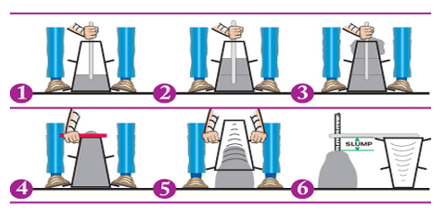

A construção cívil é um ramo muito importante para a economia e crescimento urbano no mundo de hoje. Com ela surgem grandes inovações e também muitos desafios, principalmente relacionados à qualidade e eficiência dos processos de contrução. Diante dessas dificuldades, o aplicativo Slump+ surge como uma solução inovadora para o controle de concretagem, oferecendo uma plataforma de manutenção e controle da concretagem.
Atualmente trabalho em uma construtora que tem em seu portifolio diversas obras em execução e outras já finalizadas. Durante o processo de concretagem identifiquei uma necessidade de armazenar e manter um controle mais eficiente nos dados obtidos durante o processo. Sempre foi utilizado planilhas, papeis e ferramentas que não garantiam a segurança e confiabilidade dos dados, alem de nao oferecerem segurança no processo de consulta quando solicitados. O Slump+ tem como objetivo resolver esse problema, oferecendo uma plataforma digital onde os dados de concretagem podem ser armazenados de forma segura e acessível. O processo ainda esta em desenvolvimento, foi realizado a coleta de dados de engenheiros sobre quais funcionalidades eles gostariam de ter. O proximo passo é a escolha das ferramentas de desenvolvimento.

.jpg)